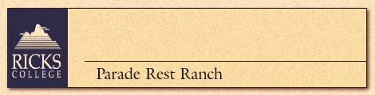
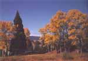

 |
Minutes from Yellowstone National Park, Parade Rest Ranch
lies nestled in a large grove of aspen and cottonwood trees in the pine-clad
foothills of the Gallatin Mountain Range. The ranch is located on the old
Bannock Indian Trail at 6,500 feet. Views of beautiful Hebgen Lake and
the meandering Grayling Creek add to the tranquility of this mountain hideaway.
Log cabins, decorated in western decor. Multiple occupancy cabins (double
and twin beds) occupied by a maximum of 1 couple or 3 singles with single
men and women housed separately; one bath in each cabin shared by up to
3 people. Meals and classes a short walk from cabins. Enjoy an old-fashioned
cookout while basking in the beautiful scenery. No alcohol allowed.
Bus: Y Plane: Y Train: N Ferry: N |
| Sept. 27-Oct. 3, 1998 |
| Sept. 27-Oct 3,1998 - $395 | Top • Back |
| FLY FISHING: THE
GREATER YELLOWSTONE AREA EXPERIENCE
Capture the romance of fly fishing in one of the world’s most pristine areas. Hands on experience for women and men, beginning to advanced. Instruction includes casting, fly selection, and water reading, etc. Bring your own rods, some rentals available. EARLY HISTORY OF YELLOWSTONE PARK: A UNIQUE
GLIMPSE OF THE PAST
VOLCANOS, EARTHQUAKES, HOT SPOTS: REMARKABLE
DISTURBANCES IN THE EARTH'S CRUST
|
|